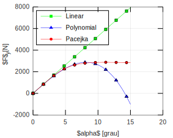
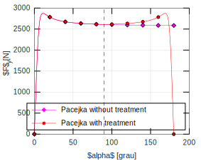

Comparison between tire models: TireLinear, TirePacejka and TirePolynomial.
The typical relation between the lateral force and the slip angle can be observed in the figure below (Adapted from [1]). Besides, its possible to verify the definition of slip angle.

Given a reference Pacejka tire model it is possible to obtain an equivalent linear and polynomial model. The cornering stiffness of all models must be equal and the maximal lateral force of the Pacejka and Polynomial models must be the same.
The Pacejka model depends on the parameters \(a0\), \(a1\), \(a2\), \(a3\), \(a4\), \(a5\), \(a6\) e \(a7\) that defines the constants \(B\), \(C\), \(D\) and \(E\) wich can be used to define the constants of the equivalent models.
The equivalent linear tire model has cornering stiffness \(K\) given by
\[ K = B C D \]
The equivalent polynomial tire model has coeficients \(k1\) and \(k2\) given by
\[ k_1 = B C D \]
\[ k2 = (4 k1^3)/(27 F_{y, Max}^2) \]
where \(F_{y, Max}\) is the maximal lateral force of the reference characteristic curve.
% Code start deriva = (0:0.1:15)*pi/180; % ngulo de deriva [rad] a0 = 1.3; a1 = 2.014156; a2 = 710.5013; a3 = 5226.341; a4 = 78.87699; a5 = 0.01078379; a6 = -0.004759443; a7 = -1.8572; a8 = 0; a9 = 0; a10 = 0; a11 = 0; a12= 0; a13 = 0; TirePac = TirePacejka(); Fz = 4e+03; camber = 0; TirePac.a0 = a0; TirePac.a1 = a1; TirePac.a2 = a2; TirePac.a3 = a3; TirePac.a4 = a4; TirePac.a5 = a5; TirePac.a6 = a6; TirePac.a7 = a7; TirePac.a8 = a8; TirePac.a9 = a9; TirePac.a10 = a10; TirePac.a11 = a11; TirePac.a12= a12; TirePac.a13 = a13; muy0 = TirePac.a1 * Fz/1000 + TirePac.a2; D = muy0 * Fz/1000; BCD = TirePac.a3 * sin(2 * atan(Fz/1000/TirePac.a4))*(1-TirePac.a5 * abs(camber)); % Linear tire model K = BCD * 180/pi; TireLin = TireLinear(); TireLin.k = K; % Polynomial tire MODEL k1 = BCD * 180/pi; k2 = (4 * k1^3)/(27 * D^2); TirePol = TirePolynomial(); TirePol.k1 = k1; TirePol.k2 = k2; % Lateral force FyPac = TirePac.Characteristic(deriva, Fz, muy0/1000); FyLin = TireLin.Characteristic(deriva); FyPol = TirePol.Characteristic(deriva); % Graphics g = Graphics(TirePac); f1 = figure(1); ax = gca; set(ax, 'NextPlot', 'add', 'Box', 'on', 'XGrid', 'on', 'YGrid', 'on') p1 = plot(deriva * 180/pi,-FyLin, 'Color', 'g', 'Marker', 's', 'MarkerFaceColor', 'g', 'MarkeredgeColor', 'k', 'MarkerSize', 2); p2 = plot(deriva * 180/pi,-FyPol, 'Color', 'b', 'Marker', '^', 'MarkerFaceColor', 'b', 'MarkeredgeColor', 'k', 'MarkerSize', 2); p3 = plot(deriva * 180/pi,-FyPac, 'Color', 'r', 'Marker', 'o', 'MarkerFaceColor', 'r', 'MarkeredgeColor', 'k', 'MarkerSize', 2); g.changeMarker(10,p1,p2,p3); xlabel('\(\alpha\) [grau]', 'Interpreter', 'Latex') ylabel('\(F_y\) [N]', 'Interpreter', 'Latex') l = legend('Linear', 'Polynomial', 'Pacejka'); set(l, 'Interpreter', 'Latex', 'Location', 'NorthWest')
In the above figure the 3 characteristic curves are plotted. For small slip angles all models are equivalents.
deriva180 = (0:0.1:180)*pi/180; % ngulo de deriva de 0 180 graus [rad] % Sem tratamento ALPHA = deriva180 * 180/pi; C = a0; muy = muy0; E = a6 * Fz/1000 + a7; B = BCD/(C * D); Sh = a8 * camber + a9 * Fz/1000 + a10; Sv = a11 * Fz/1000 * camber + a12 * Fz/1000 + a13; ALPHAeq = muy0/muy*(ALPHA + Sh); % Reference characteristics fy = D * sin(C * atan(B * ALPHAeq - E*(B * ALPHAeq - atan(B * ALPHAeq)))); % Lateral force FyPacSem180 = -muy/muy0*(fy + Sv); % Com tratamento FyPacCom180 = TirePac.Characteristic(deriva180, Fz, muy0/1000); f2 = figure(2); ax = gca; set(ax, 'NextPlot', 'add', 'Box', 'on', 'XGrid', 'on', 'YGrid', 'on') p1 = plot(deriva180 * 180/pi,-FyPacSem180, 'Color', 'm', 'Marker', 'd', 'MarkerFaceColor', 'm', 'MarkeredgeColor', 'k', 'MarkerSize', 2); p2 = plot(deriva180 * 180/pi,-FyPacCom180, 'Color', 'r', 'Marker', 'o', 'MarkerFaceColor', 'r', 'MarkeredgeColor', 'k', 'MarkerSize', 2); g.changeMarker(10,p1,p2); plot([90 90],[0 3000],'--k') % Linha vertical de simetria xlabel('\(\alpha\) [grau]', 'Interpreter', 'Latex') ylabel('\(F_y\) [N]', 'Interpreter', 'Latex') l = legend('Pacejka without treatment', 'Pacejka with treatment '); set(l, 'Interpreter', 'Latex', 'Location', 'SouthEast')
In the above figure we can see that the curve is symmetric to a vertical line positioned at \(\alpha = 90 [graus]\).
[1] GILLESPIE, T. D. Fundamentals of vehicle dynamics. [S.l.]: Society of Automotive Engineers Warrendale, PA, 1992.